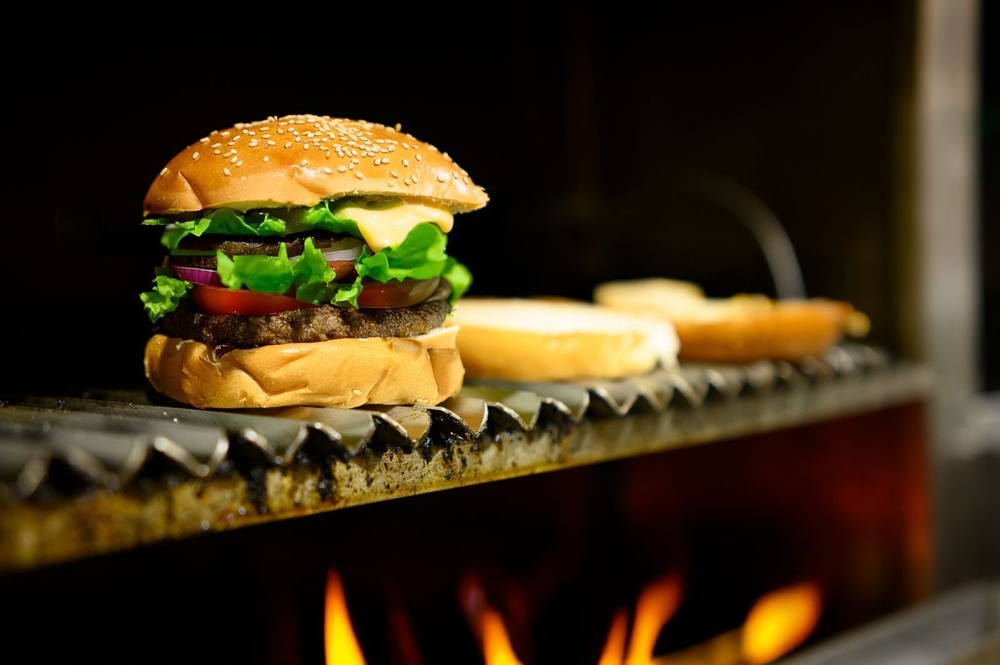
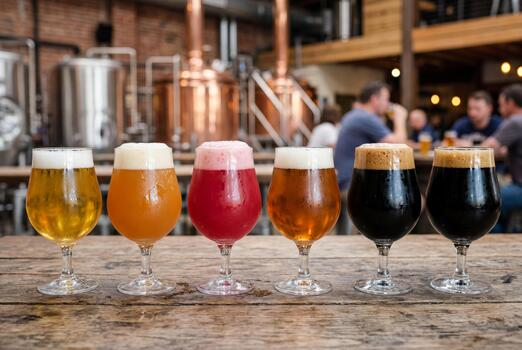

Southern Prohibition Brewing
A craft brewery and brewpub in downtown Hattiesburg, brewing since 2013.
Stock photo: A glass of beer held up in front of beer taps at a bar. This is not a photo of Southern Prohibition Brewing.
About
Southern Prohibition Brewing is a craft brewery and brewpub in downtown Hattiesburg, Mississippi, brewing since 2013. The taproom pours its own beers alongside a food menu, with dog-friendly outdoor seating, live music, trivia, and tours and tastings.
Rating: 4.9 from 333 Google reviews.
Beers and food
Dog-friendly patio, live music, trivia
Southern Prohibition has dog-friendly outdoor seating, and the taproom hosts live music and trivia. Tours and tastings are also offered. Call (601) 602-4871 to ask about the current taps and events.
Gallery


All gallery photos are stock photos, labeled as such. They show the kind of work and setting described on this page, not this business.
Visit
Address: 301 Mobile St, Hattiesburg, MS 39401
Hours: Sunday 11:00 AM to 4:00 PM, Wednesday and Thursday 3:00 PM to 10:00 PM, Friday and Saturday 11:00 AM to 10:00 PM. Closed Monday and Tuesday.
Phone: (601) 602-4871
Contact
Southern Prohibition Brewing serves Hattiesburg, MS. Questions? Call (601) 602-4871.